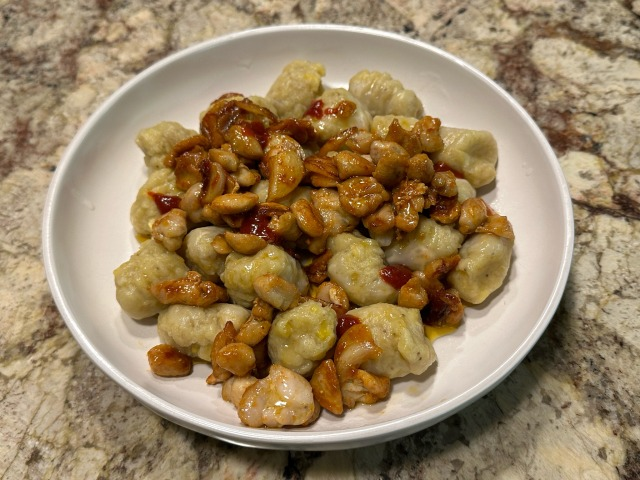

Nhoque de tentáculos

Massas ——— 4 porções
Ingredientes
- Tentáculo
- Coxa de sapo gigante
- Farinha de trigo
- Sal
- Azeite de oliva
- Alho
- Pimenta seca
- 3 un.
- 300 g (1 sapo)
- 100 g
- uma pitada
- 3 un.
- a gosto
- uma pitada
Modo de preparo
- Dissecar o sapo gigante, tirando sua pele;
- Descascar os tentáculos, guardando as partes finas para depois;
- Ferver as partes grossas dos tentáculos;
- Misturar e amassar com farinha de trigo as partes dos tentáculos fervidas;
- Moldar a mistura em palitos e cortá-los em pedacinhos;
- Ferver a mistura novamente;
- Esquentar azeite de oliva, alho e pimenta em uma panela;
- Adicionar a coxa do sapo, cortada em pedaços, à panela, e refogar;
- Adicionar à massa.
Feedback
O que você achou da receita? Amaríamos receber seu feedback!